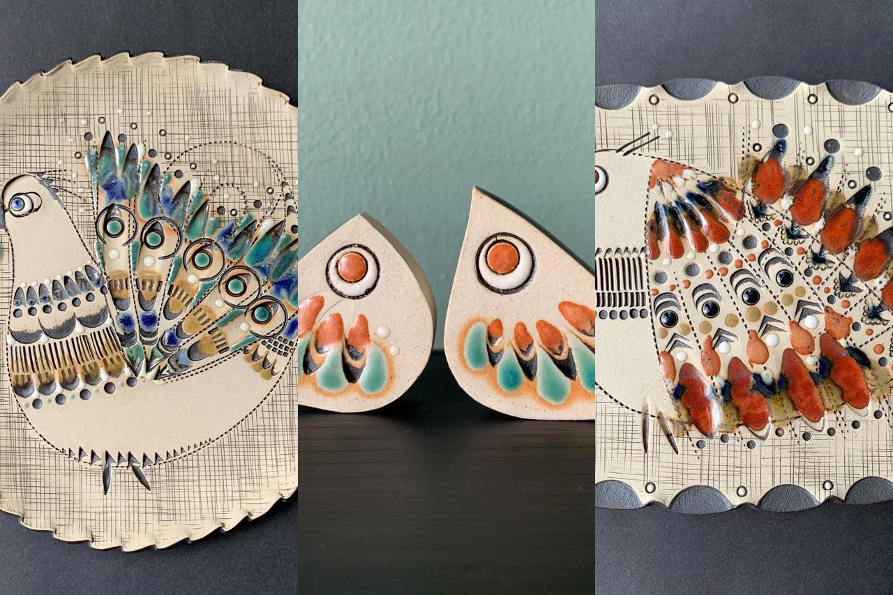
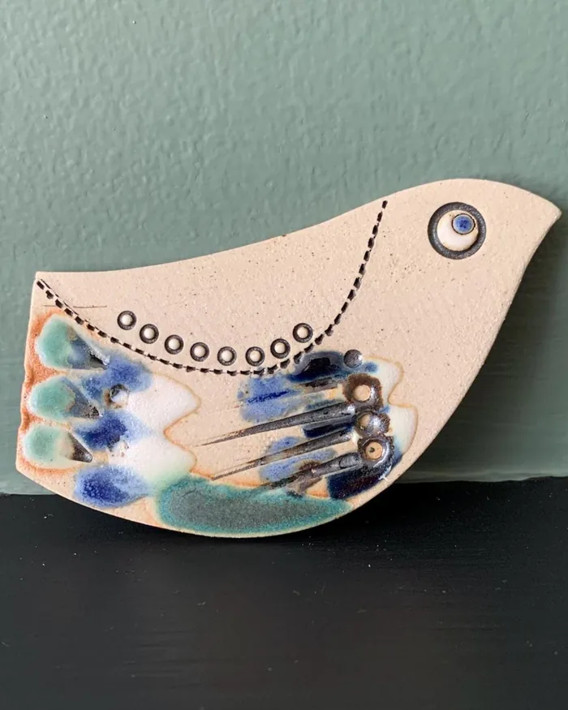
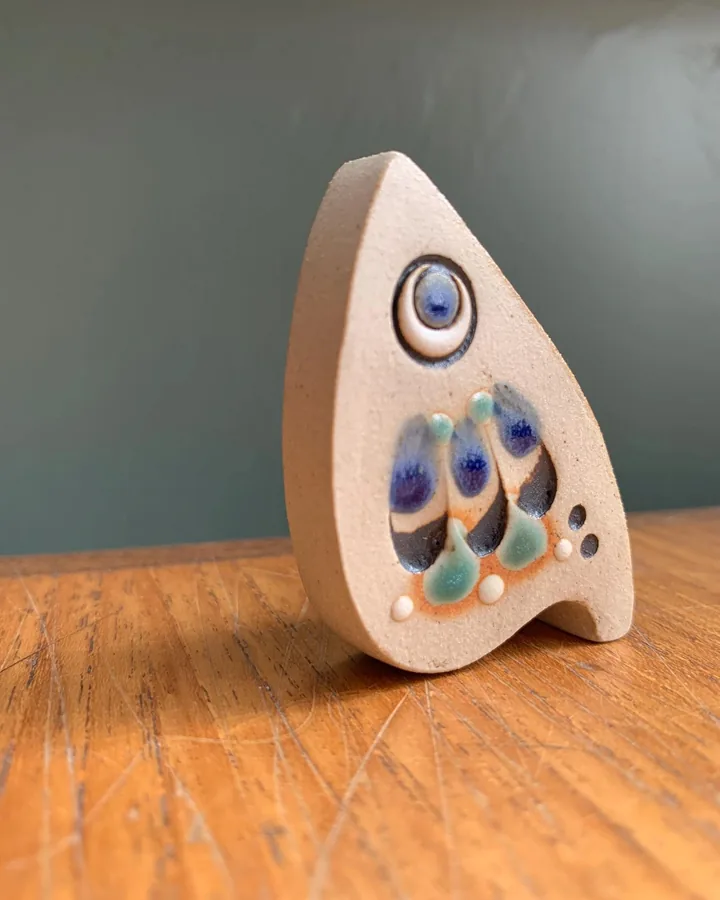
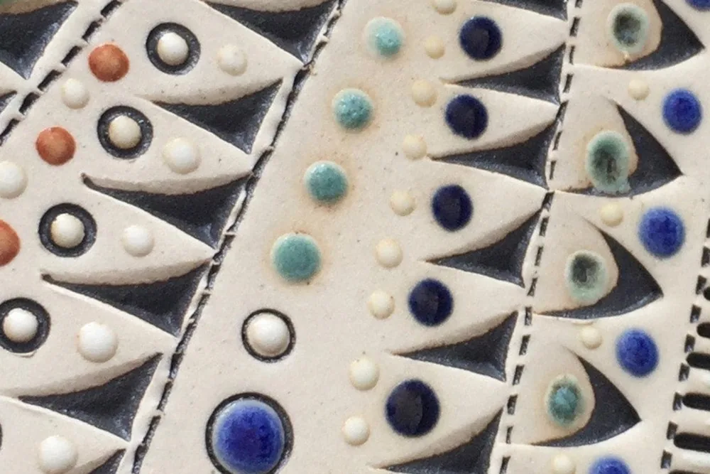
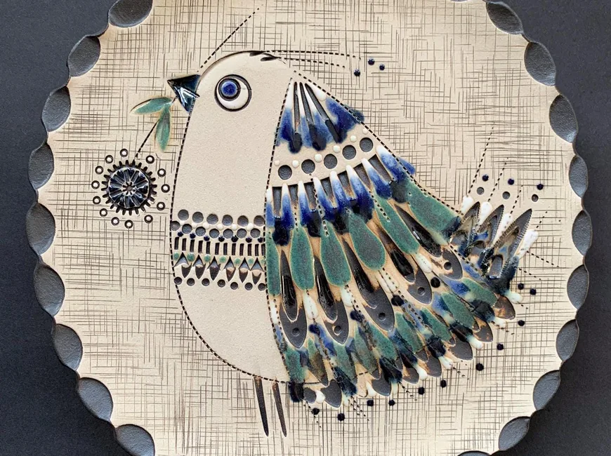
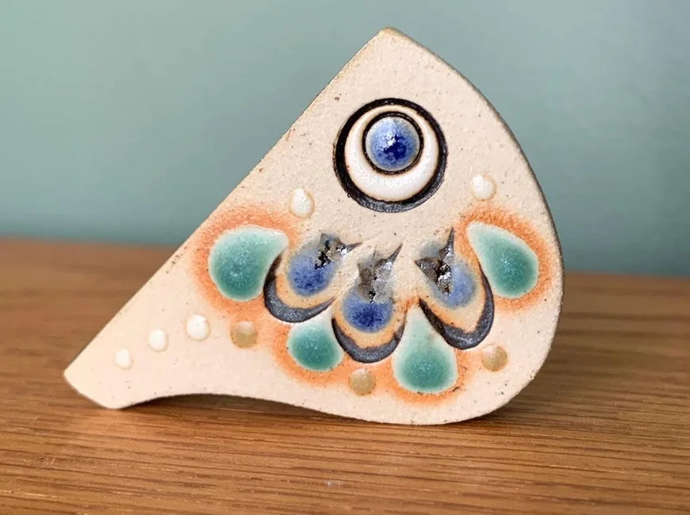
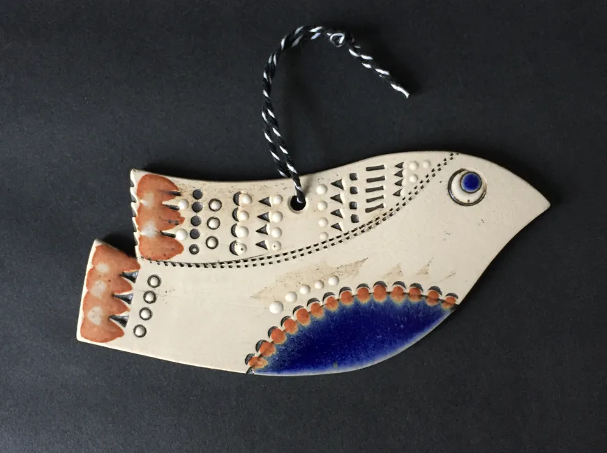
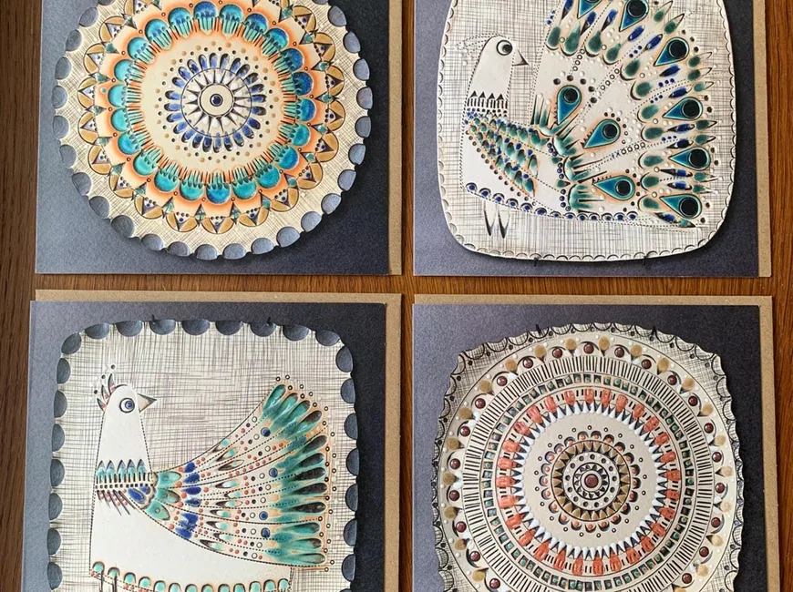

Mid-century inspired
Patterns and colours inspired by Lucienne Day, Hornsea, Bitossi, Portmeirion and Midwinter.

Handmade ceramics · Bristol, UK
Individually handmade with stamped decoration & pattern. Mid-century inspired.

Meet the Artist
Owner & artist of Katie Murton Ceramics
I make decorative ceramics, mid-century inspired and individually handmade in Bristol, with stamped decoration and pattern. I imprint into the clay with tools and found objects, like adding patterned plumage to a peacock with a manicure tool and a paintbrush handle.
Handmade mid-century inspired ceramics, with stamped decoration & dots of glaze
Our story

01 How it started
Lucienne Day, Hornsea, Bitossi, Portmeirion and Midwinter are among the many mid-century designs and patterns that inspire me.
In the shop you’ll find bird plaques, bird ornaments, patterned plates and pin dishes, each one individually handmade with stamped decoration and pattern.
— Katie
02 Where & how it’s made
Every pattern is pressed into the clay by hand, then picked out with dots of coloured glaze.

03 What makes it special
Patterns and colours inspired by Lucienne Day, Hornsea, Bitossi, Portmeirion and Midwinter.
Each piece is handmade with stamped decoration and pattern.
Greetings cards printed by a specialist sustainable printing company for artists in Helston, on FSC® certified papers.
Reviews
What we make
Decorative ceramics, mid-century inspired and individually handmade. Here are a few favourites.

Wall plates and plaques with stamped plumage and scalloped edges.

Standing birds, tiny sleepy birds and pairs, each with its own pattern.

Pottery birds to hang, with stamped decoration and dots of glaze.

Cards printed with photos of her patterns, singles or a pack of four.
Everything is sold through the online shop, with secure checkout and buyer protection.
Stay in the loop
Sign up to be the first to know about sales and new products.
You’re in! 🎉
Continue to the shopBird ornaments, wall plates and cards by Katie. Follow along on Instagram to see the making!
Visit the shop